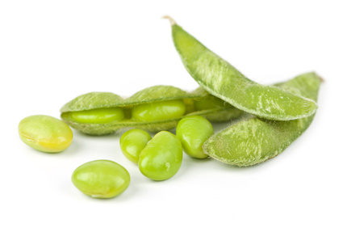

Soybean (Glycine max)

Mating & Breeding System: Soybeans have small flowers with a typical legume flower structure. Some cultivars are entirely cleistogamous, which means that the flower buds do not open and fertilization takes place with self-pollen without any outside influence. Other cultivars have flowers that open only under the right environmental conditions.
Pollen dispersal by insects or wind appears to be limited to very short distances, which is important not only for pollination but also with respect to the movement of genes between genetically modified (GM) and conventional soy crops.
Pollination, Quality & Yield: In the early history of soybean culture, it was believed that plants were fully self-compatible and fully self-pollinating, and that flowers were not visited by insects. However, most (75%) of soybean flowers abort, and this could be due to poor pollination or to limited resources.
Because some cultivars have flowers that only open under the right conditions, bloom can vary within an area or even within a single field. When conditions are suitable, soybeans will produce some nectar but are usually a poor pollen resource. Research results have been ambiguous but there is anecdotal evidence that the presence of honey bees (i.e,in crops grown in the vicinity of commercial hives) or wild bees (i.e., in fields with abundant wild flowers in the field margins) may increase the yield of soybean. The benefits of either cross- or self-pollination may depend on cultivar.
Pollination Recommendations: Further research on the value of adding pollinators to soybeans is needed. Honey bees are the most likely candidate, as they appear to be among the most enthusiastic foragers in this crop. A stocking rate of 1.5 colonies per hectare has been proposed based on foraging rates and bloom density.
References
Ahrent, D.K. & Caviness, C.E. 1994. Natural cross-pollination of 12 soybean cultivars in Arkansas. Crop Science 34:376-378.
Erickson, E.H. 1975a. Honey bees and soybeans. American Bee Journal 351-353.
Erickson, E.H. 1984. Soybean pollination and honey production - a research progress report. American Bee Journal 775-779.
Ray, J.D., Kilen, T.C., Abel, C.A., & Paris, R.L. 2003. Soybean natural cross-pollination rates under field conditions. Environmental Biosafety Research 2:133-138.
Roumet, P. & Magnier, I. 1993. Estimation of hybrid seed production and efficient pollen flow using insect pollination of male-sterile soybeans in caged plots. Euphytica 70:61-67.
Severson, D.W. 1983. Honey bees and soybeans: analysis of floral chemistry relating to foraging preferences. Ph.D. Thesis, University of Wisconsin - Madison.
Yoshimura, Y. 2011. Wind tunnel and field assessment of pollen dispersal in soybean [Glycine max (L.) Merr.].Journal of Plant Research 124:109-114.